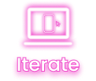

My Design Process in a Nutshell
When crafting a great design, I always ask myself “what is the problem and how can design solve this?”
Understanding the problem and identifying potential solutions through interviews and competitor analysis
Designing a product based on potential solutions identified during the research phase
Testing to validate the design by identifying usability issues and opportunities for design improvements

Iterating the design using testing results to enhance user experience and optimize product usability